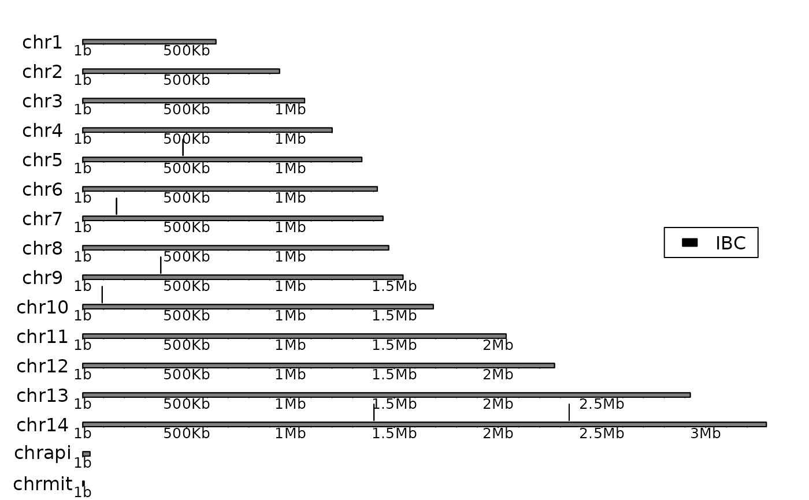
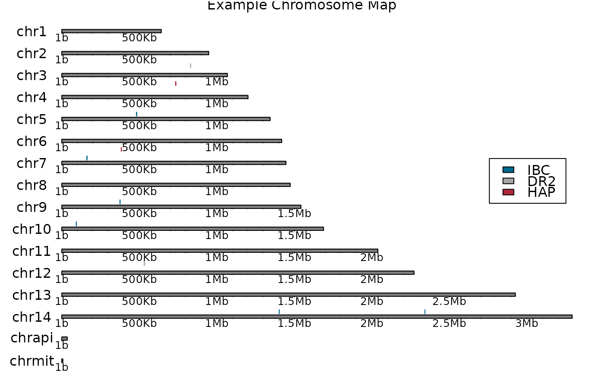

Render a graphics visualization of entire chromosomes or chromosomal regions. Annotate multiple targeted regions to visualize probe targets.
Arguments
- genome
A tibble indicating the starting and ending position of each chromosome. Contains three columns:
Name of the chromosome
The starting position of the chromosome
The ending position of the chromosome.
- probes
A tibble indicating the starting and ending position of each probe. Contains four columns:
Name of the chromosome the probe is on
The starting position of the probe
The ending position of the probe
An identifier indicating the probe set the probe belongs to.
- title
The title of the plot.
- colours
A vector of colours indicating the annotation colour for each probe set.
- ...
<
dynamic-dots> Additional arguments passed to internal plotting functions.
Examples
probes <- tibble::tribble(
~chrom, ~start, ~end, ~probe_set,
"chr14", 2342135L, 2342284L, "IBC",
"chr3", 830503L, 830769L, "DR2",
"chr5", 482233L, 482391L, "IBC",
"chr9", 375274L, 375417L, "IBC",
"chr12", 532032L, 532281L, "DR2",
"chr7", 383447L, 383653L, "HAP",
"chr14", 1401991L, 1402160L, "IBC",
"chr4", 734737L, 734936L, "HAP",
"chr10", 93054L, 93223L, "IBC",
"chr7", 162127L, 162277L, "IBC"
)
single_probe <- tibble::tribble(
~chrom, ~start, ~end, ~probe_set,
"chr14", 2342135L, 2342284L, "IBC",
"chr5", 482233L, 482391L, "IBC",
"chr9", 375274L, 375417L, "IBC",
"chr14", 1401991L, 1402160L, "IBC",
"chr10", 93054L, 93223L, "IBC",
"chr7", 162127L, 162277L, "IBC"
)
plot_chromoMap(genome_Pf3D7, probes)
plot_chromoMap(genome_Pf3D7, single_probe, colours = "red")
plot_karyoploteR(genome_Pf3D7, single_probe)

plot_karyoploteR(
genome_Pf3D7,
probes,
title = "Example Chromosome Map",
colours = c("#006A8EFF", "#A8A6A7FF", "#B1283AFF")
)
